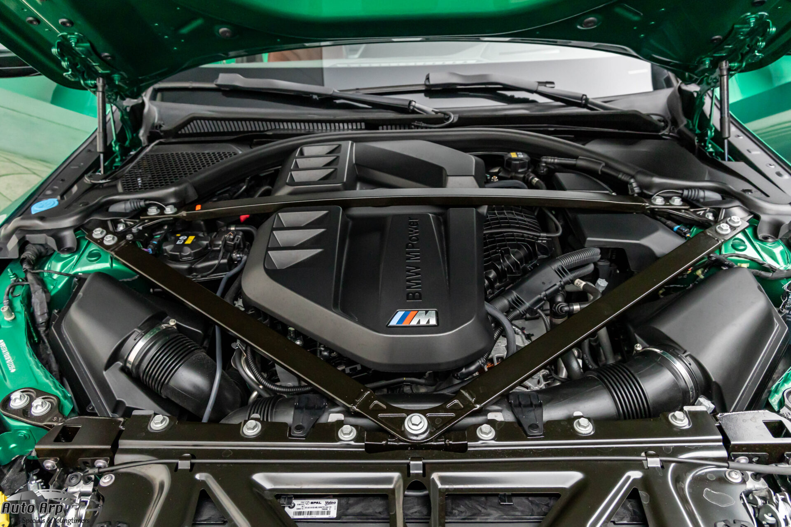

Moteur expressif
Un six-cylindres biturbo de 510 ch, rageur dans les tours et souple à bas régime.
TRIOLE GOÛT DE LA ROUTE
Une silhouette basse, des lignes tendues et le plaisir de conduire comme seule destination. Pour ceux qui aiment autant le trajet que l’arrivée.

Sous sa robe noire, la sportive cache un six-cylindres en ligne biturbo qui ne demande qu’à s’exprimer. Châssis précis, direction affûtée, freinage mordant : chaque virage devient un rendez-vous. Et quand la route se calme, quatre vraies places et un coffre généreux rappellent qu’elle sait aussi vivre au quotidien.
Un six-cylindres biturbo de 510 ch, rageur dans les tours et souple à bas régime.
Suspension adaptative et direction directe pour une précision de chaque instant.
Le caractère d’une sportive, le confort d’une berline pour partager la route.
Données constructeur indicatives, selon version et équipements.
| Motorisation | 6 cylindres en ligne, 3,0 L biturbo |
|---|---|
| Puissance | 510 ch |
| Couple | 650 Nm |
| Transmission | Automatique 8 rapports |
| 0 à 100 km/h | 3,9 s |
| Vitesse maximale | 250 km/h (limitée) |
| Carrosserie | Berline 4 portes, 5 places |